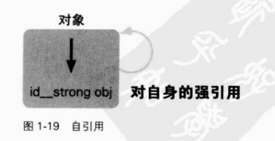
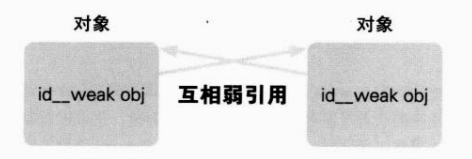

上一节复习了 Objective-C的内存管理,本节讲述ARC所引起的变化。 实际上“引用计数式内存管理”的本质部分在ARC中并没有改变。就像“自动引用计数” 这个名称表示的那样,ARC只是自动地帮助我们处理“引用计数”的相关部分。 在编译单位上,可设置ARC有效或无效,这一点便能佐证上述结论。比如对每个文件可选 择使用或不使用ARC。如图1-16所示:

设置ARC有效的编译方法如下所示
Xcode42默认设定为对所有的文件ARC有效。 另外,本书以后的章节中出现的源代码,如非明确说明,均为ARC有效。ARC无效时用的 源代码会作出“/*ARC无效*”标记
引用计数式内存管理的思考方式就是思考ARC所引起的变化。
这一思考方式在ARC有效时也是可行的。只是在源代码的记述方法上稍有不同。到底有什 么样的变化呢?首先要理解ARC中追加的所有权声明。
Objective-C编程中为了处理对象,可将变量类型定义为讪类型或各种对象类型。 所谓对象类型就是指向 NSObject这样的 Objective-C类的指针,例如“ NSObject*”。id类型 用于隐藏对象类型的类名部分,相当于C语言中常用的“void*”。 ARC有效时,id类型和对象类型同C语言其他类型不同,其类型上必须附加所有权修饰符 所有权修饰符一共有4种。
__strong修饰符是d类型和对象类型默认的所有权修饰符。也就是说,以下源代码中的id 变量,实际上被附加了所有权修饰符。
id obj =[[NSObject alloc] init]:
id和对象类型在没有明确指定所有权修饰符时,默认为__strong修饰符。上面的源代码与以 下相同。
id __strong obj= [[NSObject alloc] init]
该源代码在ARC无效时又该如何表述呢?
/*ARC无效* id obj=[[NSObject alloc] init];
该源代码一看则明,目前在表面上并没有任何变化。再看看下面的代码。
id __strong obj=[ [NSObject alloc] init];
此源代码明确指定了C语言的变量的作用域。ARC无效时,该源代码可记述如下:
/*ARC无效*/
{
id ob]=[ [NSObject alloc] initl:
[ob] releaser
}
为了释放生成并持有的对象,增加了调用 release方法的代码。该源代码进行的动作同先前 ARC有效时的动作完全一样。 如此源代码所示,附有 strong修饰符的变量obj在超出其变量作用域时,即在该变量被废 弃时,会释放其被赋予的对象。 如“ strong”这个名称所示, strong修饰符表示对对象的“强引用”。持有强引用的变量在 超出其作用域时被废弃,随着强引用的失效,引用的对象会随之释放。 下面关注一下源代码中关于对象的所有者的部分。
id __strong ob=[[NSObject alloc] init]
此源代码就是之前自己生成并持有对象的源代码,该对象的所有者如下:
/*自己生成并持有对象*/ id __strong ob] =[[NSObject alloc] init]; //所以自己持有对我引用, //因为变量ob为强引 //因为变量ob超出其作用域,强引用失效, //所以自动地释放自己持有的对象。 //对象的所有者不存在,因此废弃该对象。
此处,对象的所有者和对象的生存周期是明确的。那么,在取得非自己生成并持有的对象时 又会如何呢?
{
id __strong obj=[NSMutableArray array];
}
在 NSMutableArray类的aray类方法的源代码中取得非自己生成并持有的对象,具体如下
取得非自己生成并持有的对象 id __strong ob]= [NSMutableArray array]; /*因为变量obj为强引用, 所以自己持有对象 因为变量obj超出其作用域,强引用失效, 所以自动地释放自己持有的对象*/
在这里对象的所有者和对象的生存周期也是明确的
自己生成并持有对象 id __strong ob]=[[NSObject alloc] init] //因为变量obj为强引用, //因为变量ob超出其作用域,强引用失效,
当然,附有 __strong修饰符的变量之间可以相互赋值。
id __strong obj =[[NSObject alloc] init]; id __strong objl =[[NSObject alloc] init]; id __strong obj2 = nil; obj0 = objl; obj2 = obj0; obj1 = nil; obj0 = nil; obj2 = nil;
下面来看一下生成并持有对象的强引用。
id __strong obj=[[NSObject alloc] init]; / RA*/ //obj0持有对象A的强引用 id __strong obj1=[ [NSObject alloc] init]; / RB*/ //ob1持有对象B的强引用 id __strong obj2= nili //ob2不持有任何对象 obj0 = objl; //obj0持有由obj1赋值的对象B的强引用 //因为obj0被赋值,所以原先持有的对对象A的强引用失效。 //*对象A的所有者不存在,因此废弃对象A。 //此时,持有对象B的强引用的变量为 //ob0和obj1。 obj2 = obj0; //obj2持有由obj0赋值的对象B的强引用 //obj0,obj1和obj2。 obj1 = nil //因为ni1被赋予了ob1,所以对对象B的强引用失效。 //此时,持有对象B的强引用的变量为obj0和obj2。 objo = nil; //*因为ni1被赋予obj0,所以对对象B的强引用失效 //此时,持有对象B的强引用的变量为obj2。 obj2 = nil //因为nil被赋予obj2,所以对对象B的强引用失效。 //对象B的所有者不存在,因此废弃对象B。
通过上面这些不难发现, __strong修饰符的变量,不仅只在变量作用域中,在赋值上也能够 正确地管理其对象的所有者。 当然,即便是 Objective-C类成员变量,也可以在方法参数上,使用附有__strong修饰符的 变量。
@interface Test : NSobject{
id __strong obj_;
}
-(void)setobject:(id __strong)obj;
@end
@implementation Test
-(id)init{
self = [super init];
return self;
}
-(void)setobject:(id __strong)obj
obj_ = obj;
@end
下面试着使用该类。
id __strong test =[[Test alloc] init] [test setobject: [[NSObject alloc] init]];
该例中生成并持有对象的状态记录如下:
{
id __strong test =[[Test alloc] init];
//test持有Test对象的强引用
[test setobject: [[NSObject alloc] init]];
//Test对象的ob成员,持有 NSObject对象的强引用。
}
/*
*因为test变量超出其作用域,强引用失效,
*所以自动释放Test对象。
*Test对象的所有者不存在,因此废弃该对象。
*废弃Test对象的同时,
*Test对象的obj成员也被废弃
*NSObject对象的强引用失效,
*自动释放 NSObject对象。
*NSObject对象的所有者不存在,因此废弃该对象。
*/
像这样,无需额外工作便可以使用于类成员变量以及方法参数中。关于类属性,会在后面详细说明
另外, __strong修饰符同后面要讲的__weak修饰符和__autoreleasing修饰符一起,可以保证将附有这些修饰符的自动变量初始化为nil
id __strong obj; id __weak objl id __autoreleasing obj2;
以下源代码与上相同。
id __strong obj= nil id __weak obj1 = nil id __autoreleasing obj2=nil;
正如苹果宣称的那样,通过__strong修饰符,不必再次键入 retain或者 release,完美地满足 了“引用计数式内存管理的思考方式”:
前两项“自己生成的对象,自己持有”和“非自己生成的对象,自己也能持有”只需通过对 带 __strong修饰符的变量赋值便可达成。通过废弃带 __strong修饰符的变量(变量作用域结束或 是成员变量所属对象废弃)或者对变量赋值,都可以做到“不再需要自己持有的对象时释放”。 最后一项“非自己持有的对象无法释放”,由于不必再次键入 release,所以原本就不会执行。这 些都满足于引用计数式内存管理的思考方式。 因为id类型和对象类型的所有权修饰符默认为 __strong修饰符,所以不需要写上“ __strong”。使ARC有效及简单的编程遵循了 Objective-C内存管理的思考方式。
看起来好像通过__strong修饰符编译器就能够完美地进行内存管理。但是遗憾的是,仅通过 __strong修饰符是不能解决有些重大问题的。 这里提到的重大问题就是引用计数式内存管理中必然会发生的“循环引用”的问题。如图 1-17所示。
例如,前面出现的带有 strong修饰符的成员变量在持有对象时,很容易发生循环引用。
@interface Test NSobject{
id __strong obj;
-(void) setobject:(id __strong)obj;
}
@end
@implementation Test{
-(id)init{
self = [super init];
return self:
}
-(void)setobject: (id __strong)obj{
obj_ = obj;
}
@end
以下为循环引用。
id testo = [[Test alloc] init]; id testl =[[Test alloc] init]; [testo setobject: testl]; [testl setobject: testo]; }
为便于理解,下面写出了生成并持有对象的状态。
id testo = [[Test alloc] init];/*对象A*/ /*test0持有Test对象A的强引用*/ id test1=[[ Test a1loc]init];/*对象B*/ /*test1持有Test对象B的强引用*/ [testo setobject: testl]; /*Tet对象A的ob成员变量持有Test对象B的强引用。 *此时,持有Test对象B的强引用的变量为 *Test对象A的obj和test1。 */ [testl setobject: testo]; /*Test对象B的ob)成员变量持有Test对象A的强引用。 *此时,持有Test对象A的强引用的变量为 *Test对象B的obj和test0 */ /* *因为test0变量超出其作用域,强引用失效, *所以自动释放Test对象A *因为test1变量超出其作用域,强引用失效 *所以自动释放Test对象B。 *此时,持有Test对象A的强引用的变量为 *Test对象B的obj。 *此时,持有Test对象B的强引用的变量为 *Test对象A的obj。 *发生内存泄漏! */

循环引用容易发生内存泄漏。所谓内存泄漏就是应当废弃的对象在超出其生存周期后继续存在。 此代码的本意是赋予变量 testO的对象A和赋予变量 testl的对象B在超出其变量作用域时被 释放,即在对象不被任何变量持有的状态下予以废弃。但是,循环引用使得对象不能被再次废弃。 像下面这种情况,虽然只有一个对象,但在该对象持有其自身时,也会发生循环引用(自 引用)。如图1-19所示。
id test =[[Test alloc] init]; [test setobject: test];
怎么样才能避免循环引用呢?看到 __strong修饰符就会意识到了,既然有 __strong,就应该有 与之对应的__weak。也就是说,使用__weak修饰符可以避免循环引用。 __weak修饰符与__strong修饰符相反,提供弱引用。弱引用不能持有对象实例。我们来看 看下面的代码。
id __weak obj = [[NSObject alloc] init];
变量obj上附加了__weak修饰符。实际上如果编译以下代码,编译器会发出警告。

此源代码将自己生成并持有的对象赋值给附有__weak修饰符的变量obj。即变量obj持有对 持有对象的弱引用。因此,为了不以自己持有的状态来保存自己生成并持有的对象,生成的对象 会立即被释放。编译器对此会给出警告。如果像下面这样,将对象赋值给附有 __strong修饰符的 变量之后再赋值给附有__weak修饰符的变量,就不会发生警告了。
id __strong obj=[[NSObject alloc] init]; id __weak objl obj0:
下面确认对象的持有状况。
/*自己生成并持有对象*/ id __strong obj0=[[NSObject alloc] init]: /* *因为obj0变量为强引用, *所以自己持有对象。 */ id __weak ob1 obj: /*obj1变量持有生成对象的弱引用*/ /* *因为obj0变量超出其作用域,强引用失效, *所以自动释放自己持有的对象。 *因为对象的所有者不存在,所以废弃该对象。 */
因为带weak修饰符的变量(即弱引用)不持有对象,所以在超出其变量作用域时,对象 即被释放。如果像下面这样将先前可能发生循环引用的类成员变量改成附有weak修饰符的成 员变量的话,该现象便可避免。如图1-20所示。
@interface Test NSobject id __weak obj_; -(void)setobject:(id __strong)obj; @end
__weak修饰符还有另一优点。在持有某对象的弱引用时,若该对象被废弃,则此弱引用将 自动失效且处于nil被赋值的状态(空弱应用)。如以下代码所示。
id __weak obj1 = nil;
{
id __strong obj0=[[NSObject alloc] init];
obj1 = obj0:
NSLog(@"A: %@", obj1);
}
NSLog(@"B: %@",obj1);
此源代码执行结果如下:
A: <NSObject: 0x753e180> B:(nu11)
下面我们来确认一下对象的持有情况,看看为什么会得到这样的执行结果。
id __weak obj1 = nil
{
/*
*自己生成并持有对象
*/
id __strong obj0=[[NsObject alloc] init];
/*
*因为obj0变量为强引用,
*所以自己持有对象
*/
obj1 = obj0;
/*obj1变量持有对象的弱引用*/
Nsog(@"A:%@”,obj1);
/*
*输出ob1变量持有的弱引用的对象
*/
}
/*
*因为ob0变量超出其作用域,强引用失效,
*所以自动释放自己持有的对象。
*因为对象无持有者,所以废弃该对象。
*废弃对象的同时,
*持有该对象弱引用的obj1变量的弱引用失效,ni1赋值给obj1。
*/
NSLog(@"B:%@”,obj1);
/*
*输出赋值给obj1变量中的nil
*/
像这样,使用__weak修饰符可避免循环引用。通过检查附有__weak修饰符的变量是否为 可以判断被赋值的对象是否已废弃 遗憾的是,__weak修饰符只能用于iOS5以上及 O X Lion以上版本的应用程序。在iOS4 以及 OS X Snow Leopard的应用程序中可使用__unsafe_unretained修饰符来代替。
__unsafe_unretained修饰符正如其名 unsafe所示,是不安全的所有权修饰符。尽管ARC式 的内存管理是编译器的工作,但附有__unsafe_unretained修饰符的变量不属于编译器的内存管理 对象。这一点在使用时要注意。
id __unsafe_unretained obj =[[NSObject alloc] init];
该源代码将自己生成并持有的对象赋值给附有 __unsafe_unretained修饰符的变量中。虽然使用了 unsafe的变量,但编译器并不会忽略,而是给出适当的警告。

附有 __unsafe_unretained修饰符的变量同附有__weak修饰符的变量一样,因为自己生成并 持有的对象不能继续为自己所有,所以生成的对象会立即被释放。到这里, __unsafe_unretained 修饰符和__weak修饰符是一样的,下面我们来看看源代码的差异。
id __unsafe_unretained obj1 = nil;
{
id __strong obj0=[[ NSObject a1loc]init];
obj1 = obj0;
NSLog(e"A: %@",obj1)
}
NSLog(e"B: %@", obj1);
该源代码的执行结果为:
A: <NSObject: 0x753e180> B: <NSObject: 0x753e180>
我们还像以前那样,通过确认对象的持有情况来理解发生了什么。
id __unsafe_unretained objl =nil;
{
/*
*自己生成并持有对象
*/
id strong obj=[[NsObject alloc] init]
/*
*因为ob0变量为强引用,
*所以自己持有对象
*/
obj1 = obj0;
/*
*虽然obj0变量赋值给obj1,
*但是obj1变量既不持有对象的强引用也不持有弱引用
*/
NSLog("A:%@”,obj1);
/*
*输出ob1变量表示的对象
*因为obj0变量超出其作用域,强引用失效,
*所以自动释放自己持有的对象。
*因为对象无持有者,所以废弃该对象。
*/
NSLog(Q"B: %@",obj1);
/*
*输出ob1变量表示的对象
*/
}
/*
*obj1变量表示的对象
*已经被废弃(悬垂指针)!
*错误访问!
*/
也就是说,最后一行的 NSLog只是碰巧正常运行而已。虽然访问了已经被废弃的对象,但 应用程序在个别运行状况下才会崩溃。 在使用__unsafe_unretained修饰符时,赋值给附有 __strong修饰符的变量时有必要确保被赋 值的对象确实存在 但是,在使用前,让我们再一次想想为什么需要使用附有 __unsafe_unretained修饰符的变量。 比如在ioS4以及 OS X Snow Leopard的应用程序中,必须使用 __unsafe_unretained修饰符 来替代__weak修饰符。赋值给附有__unsafe_unretained修饰符变量的对象在通过该变量使用时, 如果没有确保其确实存在,那么应用程序就会崩溃
ARC有效时 autorelease会如何呢?实际上,后面讲到的原则中也会说明(参考1.3.3节), 不能使用 autorelease方法。另外,也不能使用 NSAutoreleasePool类。这样一来,虽然 autorelease 无法直接使用,但实际上,ARC有效时 autorelease功能是起作用的。 ARC无效时会像下面这样来使用:
/* *ARC无效 */ NSAutoreleasePool *pool=[[NSAutorelease Pool alloc] init]; id obj= [[NSObject alloc] init]; [obj autorelease]; [pool drain];
ARC有效时,该源代码也能写成下面这样:
@autoreleasepool {
id __autoreleasing obj=[[NSObject alloc] init];
}
指定“@autoreleasepool块”来替代“ NSAutorelease Pool类对象生成、持有以及废弃”这一范围。 另外,ARC有效时,要通过将对象赋值给附加了 __autoreleasing修饰符的变量来替代调用 autorelease方法。对象赋值给附有__autoreleasing修饰符的变量等价于在ARC无效时调用对象 的 autorelease方法,即对象被注册到 autoreleasepool 也就是说可以理解为,在ARC有效时,用@autoreleasepool块替代 NSAutoreleasePool类, 用附有 __autoreleasing修饰符的变量替代 autorelease方法。如图1-21所示。

但是,显式地附加__autoreleasing修饰符同显式地附加__strong修饰符一样罕见。 我们通过实例来看看为什么非显式地使用 autoreleasing修饰符也可以。 取得非自己生成并持有的对象时,如同以下源代码,虽然可以使用 alloc/new/copy mutableCopy以外的方法来取得对象,但该对象已被注册到了 autoreleasepool。这同在ARC无效 时取得调用了 autorelease方法的对象是一样的。这是由于编译器会检查方法名是否以 alloc/new copy/mutableCopy开始,如果不是则自动将返回值的对象注册到 autoreleasepool 另外,根据后面要讲到的遵守内存管理方法命名规则(参考1.34节),init方法返回值的对 象不注册到 autoreleasepool
@autoreleasepool {
id __strong obj= [NSMutableArray array]
}
我们再来看看该源代码中对象的所有状况。
@autoreleasepool {
/*
*取得非自己生成并持有的对象
*/
id __strong obj= [NSMutableArray array];
/*
*因为变量obj为强引用,
*所以自己持有对象。
*并且该对象
*由编译器判断其方法名后
*自动注册到 autoreleasepoo1
}
/*
*因为变量obj超出其作用域,强引用失效
*所以自动释放自己持有的对象。
*同时,随着 autoreleasepoo1块的结束,
*注册到 autoreleasepoo1中的
*所有对象被自动释放。
*因为对象的所有者不存在,所以废弃对象
*/
像这样,不使用 __autoreleasing修饰符也能使对象注册到 autoreleasepool。以下为取得非自 己生成并持有对象时被调用方法的源代码示例。
-(id)array{
return [[NSMutableArray alloc] init];
}
该源代码也没有使用__autoreleasing修饰符,可写成以下形式。
- (id)array{
id obj = [[NSMutableArray alloc] init];
return obj;
}
因为没有显式指定所有权修饰符,所以id obj同附有 __strong修饰符的 id __strong obj是完 全一样的。由于 return使得对象变量超出其作用域,所以该强引用对应的自己持有的对象会被自 动释放,但该对象作为函数的返回值,编译器会自动将其注册到 autoreleasepool 以下为使用weak修饰符的例子。虽然__weak修饰符是为了避免循环引用而使用的,但 在访问附有__weak修饰符的变量时,实际上必定要访问注册到 autoreleasepool的对象。
id weak obj1 =obj0; NSLog (@"class=%@", [obj1 class]);
以下源代码与此相同。
id __weak obj1 obj0; id __autoreleasing tmp = obj1; NSLog(@"class=%@", [tmp class]);
为什么在访问附有__weak修饰符的变量时必须访问注册到 autoreleasepool的对象呢?这是 因为__weak修饰符只持有对象的弱引用,而在访问引用对象的过程中,该对象有可能被废弃 如果把要访问的对象注册到 autoreleasepool中,那么在@ autoreleasepool块结束之前都能确保该对 象存在。因此,在使用附有__weak修饰符的变量时就必定要使用注册到 autoreleasepool中的对象。 最后一个可非显式地使用 __autoreleasing修饰符的例子,同前面讲述的dobj和 id __strong obj完全一样。那么id的指针id*obj又如何呢?可以由 id __strong obj的例子类推出id __strong obj吗?其实,推出来的是id __autoreleasing*obj。同样地,对象的指针 NSObject*obj便成为 了 NSObject* __autoreleasing * obj。 像这样,id的指针或对象的指针在没有显式指定时会被附加上_ __autoreleasing修饰符。 比如,为了得到详细的错误信息,经常会在方法的参数中传递 NSError对象的指针,而不是 函数返回值。 Cocoa框架中,大多数方法也使用这种方式,如 NSString的 stringWithContentsOfFile:encoding:eror类方法等。使用该方式的源代码如下所示。
NSError *error nil: BOOL result = [obj performoperationWithError: &error];
该方法的声明为:
-(BOOL) performoperationwithError:(NSError **)error;
同前面讲述的一样,id的指针或对象的指针会默认附加上__autoreleasing修饰符,所以等同 于以下源代码。
-(BOOL) performoperationwithError:(NSError __autoreleasing *)error;
参数中持有 NSError对象指针的方法,虽然为响应其执行结果,需要生成 NSError类对象, 但也必须符合内存管理的思考方式。 作为 alloc/new/copy/mutable Copy方法返回值取得的对象是自己生成并持有的,其他情况下 便是取得非自己生成并持有的对象。因此,使用附有 __autoreleasing修饰符的变量作为对象取得参数,与除 alloc/new/copy/mutable Copy外其他方法的返回值取得对象完全一样,都会注册到 autoreleasepool,并取得非自己生成并持有的对象。 比如 performOperation WithError方法的源代码就应该是下面这样:
(BOOL) performoperationwithError:(NSError autoreleasing *)error{
/*
*错误发生
*/
*error = [[NSError alloc]
initwithDomain: MyAppDomain code: errorCode userInfo: nil];
return No;
}
因为声明为 NSError* __autoreleasing*类型的eror作为·eror被赋值,所以能够返回注册 到 autoreleasepool中的对象。 然而,下面的源代码会产生编译器错误。
NSError *error nil; NSError **pError = & error;
赋值给对象指针时,所有权修饰符必须一致。

此时,对象指针必须附加__strong修饰符。
NSError *error nil; NSError __strong *pError =&error; /* *编译正常 */
当然,对于其他所有权修饰符也是一样
NSError __weak *error = nil; NSError *__weak *pError = & error; /* *编译正常 */ NSError __unsafe_unretained *unsafeError = nil; NSError __unsafe __unretained *pUnsafeError = & unsafeError; /* *编译正常 */
前面的方法参数中使用了附有 __autoreleasing修饰符的对象指针类型。
-(BOOL) performOperationwithError:(NSError * __autoreleasing *)error;
然而调用方却使用了附有 strong修饰符的对象指针类型。
NSError strong *error =nil; BOOL result= [obj performOperationwithError: &error];
对象指针型赋值时,其所有权修饰符必须一致,但为什么该源代码没有警告就顺利通过编译 了呢?实际上,编译器自动地将该源代码转化成了下面形式
NSError __strong *error = nil NSError __autoreleasing *tmp =error; BOOL result = [obj performOperationwithError: &tmp]; error = tmp;
当然也可以显式地指定方法参数中对象指针类型的所有权修饰符。
-(BOOL) performOperationwithError:(NSError * __strong *)error;
像该源代码的声明一样,对象不注册到 autoreleasepool也能够传递。但是前面也说过,只有 作为 alloc/new/copy/mutable Copy方法的返回值而取得对象时,能够自己生成并持有对象。其他 情况即为“取得非自己生成并持有的对象”,这些务必牢记。为了在使用参数取得对象时,贯彻 内存管理的思考方式,我们要将参数声明为附有 __autoreleasing修饰符的对象指针类型。 另外,虽然可以非显式地指定 __autoreleasing修饰符,但在显式地指定__autoreleasing修饰 符时,必须注意对象变量要为自动变量(包括局部变量、函数以及方法参数)。 下面我们换个话题,详细了解一下@ autoreleasepool。如以下源代码所示,ARC无效时,可 将 NSAutoreleasePool对象嵌套使用。
/*ARC无效* NSAutoreleasePool *poo10 = [[NSAutoreleasePool alloc] init]; NSAutoreleasePool *pool =[[NSAutoreleasePool alloc] init]; NSAutoreleasePool *pool2=[[NSAutoreleasePool alloc] init]; id obj =[[NSObject alloc] init]; [obj autorelease]; [pool2 drain]; [pool1 drain]; [pool0 drain];
同样地,@autoreleasepool块也能够嵌套使用。
@autoreleasepool{
@autoreleasepool{
@autoreleasepool {
id __autoreleasing obj=[[NSObject alloc] init];
}
}
}
比如,在OS应用程序模板中,像下面的main函数一样, @autoreleasepool块包含了全部程序。
int main(int argc, char *argv [1){
@autoreleasepool {
return UIApplicationMain(argc, argv, nil
NSStringFromClass([AppDelegate class]));
}
}
NSRunLoop等实现不论ARC有效还是无效,均能够随时释放注册到 autoreleasepool中的对象。 另外,如果编译器版本为LLMM3.0以上,即使ARC无效@ autoreleasepool块也能够使用 如以下源代码所示
/*ARC无效*/
@autoreleasepool {
id ob=[[NSObject alloc] init];
[obj autorelease];
}
因为 autoreleasepool范围以块级源代码表示,提高了程序的可读性,所以今后在ARC无效 时也推荐使用@ autoreleasepool块。 另外,无论ARC是否有效,调试用的非公开函数_ objc autorelease PoolPrint()(参考1.2.7节) 都可使用。
_objc_autoreleasePoolPrint ();
利用这一函数可有效地帮助我们调试注册到 autoreleasepool上的对象
附有__strong修饰符、__weak修饰符的变量类似于C++中的智能指针std: shared ptr和std: weak_ptr std: shared_ptr可通过引用计数来持有C++类实例,std: weak_ptr 可避免循环引用。在不得不使用没有__strong修饰符/__weak修饰符的C++时,强烈推荐 使用这两种智能指针。
在ARC有效的情况下编译源代码,必须遵守一定的规则。下面就是具体的ARC的规则。
下面详细解释各项。
内存管理是编译器的工作,因此没有必要使用内存管理的方法( retain/release/retain Count autorelease)。以下摘自苹果的官方说明。
“设置ARC有效时,无需再次键入 retain或 release代码。”
实际上,在ARC有效时,如果编译器使用了这些方法的源代码,就会出现如下错误:

一旦使用便会出现编译错误,因此可更准确地描述为:
“设置ARC有效时,禁止再次键入 retain或者是 release代码。”
retain Count和 release都会引起编译错误,因此不能使用以下代码。
for (;;) {
NSUInteger count = [obj retaincount];
[obj release];
if (count == 1 ){
break;
}
}
ARC被设置为无效时,该源代码也完全不符合引用计数式内存管理的思考方式,也就是说 它在任何情况下都无法使用,所以没有问题。 总之,只能在ARC无效且手动进行内存管理时使用 retain/release/retain Count/autorelease方法。
一般通过调用 NSObject类的alloc类方法来生成并持有 Objective-C对象。
id obj = [NSObject alloc];
但是就如 GNUstep的alc实现所示,实际上是通过直接调用 NSAllocateObject函数来生 成并持有对象的。 在ARC有效时,禁止使用 NSAllocateObject函数。同 retain等方法一样,如果使用便会引 起编译错误。

同样地,也禁止使用用于释放对象的 NSDeallocate Object函数。
如1.2.2节所示,在ARC无效时,用于对象生成/持有的方法必须遵守以下的命名规则
以上述名称开始的方法在返回对象时,必须返回给调用方所应当持有的对象。这在ARC有效时也一样,返回的对象完全没有改变。只是在ARC有效时要追加一条命名规则。
以init开始的方法的规则要比 alloc/new/copy/mutable Copy更严格。该方法必须是实例方法, 并且必须要返回对象。返回的对象应为id类型或该方法声明类的对象类型,抑或是该类的超类 型或子类型。该返回对象并不注册到 autoreleasepool上。基本上只是对aloc方法返回值的对象 进行初始化处理并返回该对象。 以下为使用该方法的源代码。
id obj=[[NSObject alloc] init];
如此源代码所示,init方法会初始化 alloc方法返回的对象,然后原封不动地返还给调用方。 下面我们来看看以init开始的方法的命名规则
-(id) initwithobject: (id)obi;
该方法声明遵守了命名规则,但像下面这个方法虽然也以init开始,却没有返回对象,因此 不能使用。
-(void) initThisobject;
另外,下例虽然也是以init开始的方法但并不包含在上述命名规则里。请注意。
-(void) initialize;
无论ARC是否有效,只要对象的所有者都不持有该对象,该对象就被废弃。对象被废弃时, 不管ARC是否有效,都会调用对象的 dealloc方法。
-(void)dealloc{
/*
*此处运行该对象被废弃时
*必须实现的代码
*/
}
例如使用C语言库,在该库内部分配缓存时,如以下所示, dealloc方法需要通过fre来释 放留出的内存。
-(void) dealloc{
free(buffer );
}
dealloc方法在大多数情况下还适用于删除已注册的代理或观察者对象。
-(void) dealloc{
[NSNotificationCenter defaultcenter] removeobserver: self];
}
另外,在ARC无效时必须像下面这样调用[ super dealloc];
/*ARC无效*/
-(void)dealloc{
/*该对象用的处理*/
super dealloc];
}
ARC有效时会遵循无法显式调用 dealloc这一规则,如果使用就会同 release等方法一样,引 起编译错误。
ARC会自动对此进行处理,因此不必书写[ super dealloc]. dealloc中只需记述废弃对象时所必需的处理。
如_ autoreleasing修饰符项所述(参考13.3节),ARC有效时,使用@autoreleasepool块替
代 NSAutoreleasePool
NSAutoreleasePool类不可使用时便会引起编译器报错。

虽说ARC有效时,不能使用区域( NSZone)。正如前所述(参考1.2.3节),不管ARC是 否有效,区域在现在的运行时系统(编译器宏OBJC2被设定的环境)中已单纯地被忽略。
C语言的结构体( struct或 union)成员中,如果存在 Objective-C对象型变量,便会引起编译错误。
struct Data {
NSMutableArray *array
}

虽然是LLVM编译器30,但不论怎样,C语言的规约上没有方法来管理结构体成员的生存 周期①。因为ARC把内存管理的工作分配给编译器,所以编译器必须能够知道并管理对象的生存 周期。例如C语言的自动变量(局部变量)可使用该变量的作用域管理对象。但是对于C语言 的结构体成员来说,这在标准上就是不可实现的。 要把对象型变量加入到结构体成员中时,可强制转换为void*(见下一条规则)或是附加前 面所述的_ unsafe unretained修饰符(参考1,3.3节)。
struct Data {
NSMutableArray __unsafe_unretained *array;
};
如前所述,附有 __unsafe_unretained修饰符的变量不属于编译器的内存管理对象。如果管理 时不注意赋值对象的所有者,便有可能遭遇内存泄漏或程序崩溃。这点在使用时应多加注意。
在ARC无效时,像以下代码这样将id变量强制转换vid*变量并不会出问题。
/*ARC无效*/ id obj = [[NSObject alloc] init]; void *p = obj;
更进一步,将该void*变量赋值给id变量中,调用其实例方法,运行时也不会有问题。
id o = p; [o release];
但是在ARC有效时这便会引起编译错误。
id型或对象型变量赋值给void*或者逆向赋值时都需要进行特定的转换。如果只想单纯地赋 值,则可以使用“__bridge转换”。
id obj=[[NSObject alloc] init]; void *p=( bridge void *)obj; id o= (__bridge id)p;
像这样,通过“ __bridge转换",id和void*就能够相互转换。 但是转换为void*的 __bridge转换,其安全性与赋值给__unsafe_unretained修饰符相近,甚 至会更低。如果管理时不注意赋值对象的所有者,就会因悬垂指针而导致程序崩溃。 __bridge转换中还有另外两种转换,分别是“ __bridge_retained转换”和“ __bridge_transfer 转换
id obj = [[NSObject allow] init]; void *p=( __bridge_retained void *)obj
__bridge_retained转换可使要转换赋值的变量也持有所赋值的对象。下面我们来看ARC无效 时的源代码是如何编写的。
/*ARC无效*/ id obj = [ [NSObject alloc] init]; void * p = obj; [(id)p retain];
__bridge_retained转换变为了 retain。变量obj和变量p同时持有对象。再来看几个其他的例子。
void *p=0;
{
id obj=[[NSObject alloc] init]:
p=(__bridge_retained void *)obj
}
NSLog(@"class=%@",[( bridge id)p class]);
变量作用域结束时,虽然随着持有强引用的变量obj失效,对象随之释放,但由于__bridge_retained转换使变量p看上去处于持有该对象的状态,因此该对象不会被废弃。下面我们比较 下ARC无效时的代码是怎样的。
/*ARC无效*/
void *p=0;
{
id obj= [[NSObject alloc] init]
/* [obj retaincount]->1*/
[obj retain];
/*[obj retainCount]->2*/
[obj release];
/* [obj retaincount]->1*/
}
/*
*[(id)p retainCount]->1
*即
*[obj retainCount]-> 1
*对象仍存在
*/
NSLog(@"class=%@",[(__bridge id)p class]);
__bridge_transfer转换提供与此相反的动作,被转换的变量所持有的对象在该变量被赋值给 转换目标变量后随之释放。
id obj=(__bridge_transfer id)p
该源代码在ARC无效时又如何表述呢?
id ob = (id)p; [obj retain]; [(id)p release]i
同__bridge_retained转换与 retain类似,__bridge__transfer转换与 release相似。在给 id obj赋 值时 retain即相当于 __strong修饰符的变量。